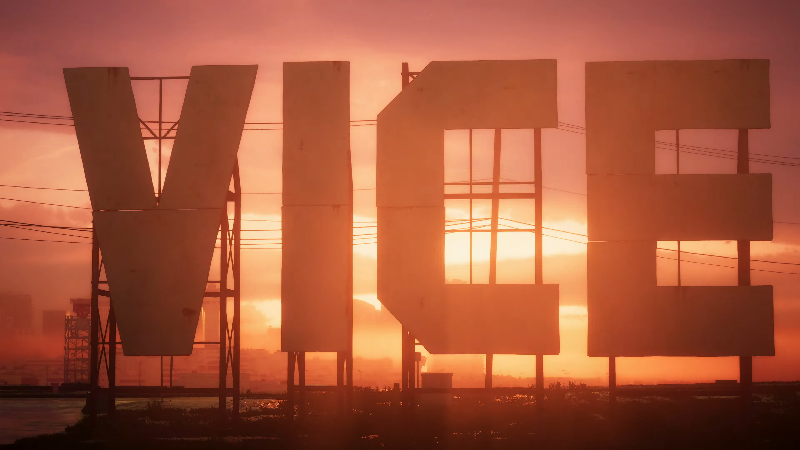

Noticias
Todas las noticias
¡Los detectives de GTA 6 lo vuelven a hacer!
Mapa filtrado revela un mundo inmenso
Un grupo de detectives online ha descifrado las pistas y filtraciones para armar un mapa preliminar del esperado GTA 6. Agárrense fuerte, porque este mapa es gigante: parece que Rockstar Games no se está conteniendo con Vice City, ¡sino que nos trae un estado entero inspirado en Florida! Para ponerlo en perspectiva, el mapa filtrado es tres veces más grande que el de GTA 5. Sin embargo, no se emocionen demasiado. El insider Jason Schreier ha advertido que, si bien el mapa será más grande que su predecesor, no llegará a las dimensiones épicas que algunos jugadores esperan.
¿Qué más sabemos?
Rumores sugieren que la voz de Jason en el tráiler podría pertenecer al actor Gregory Connors. ¿Te mueres de ganas de explorar este nuevo mundo criminal? Sigue los pasos de estos detectives de GTA y mantente alerta para más filtraciones y pistas.